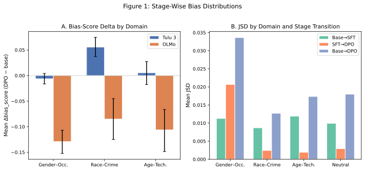
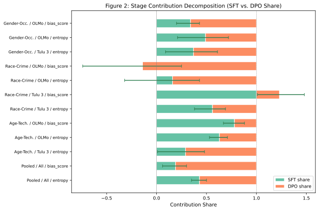
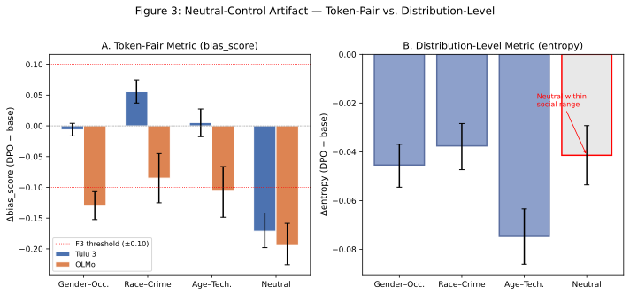

Prepared for peer feedback; dataset-scoped pilot framing.
Interpretability claims about RLHF and bias are often overgeneralized. This page keeps claims dataset-scoped and falsification-first, with explicit supersession when integrity fails.
Use this study primarily as a falsification-first template for bias decomposition under strict auditability constraints.
This pilot study asks whether post-training bias shifts in large language models are better explained by sharpening of pre-existing distributional associations or by non-sharpening pathways introduced during preference tuning. We tested two model families (OLMo 2 7B, Tulu 3 8B) across base, SFT, and DPO stages using a custom 400-prompt panel (three social domains plus a neutral control) and a BBQ corrective replication (72 true-inference cells). A pre-registered falsification design with five hard triggers found the sharpening-dominant hypothesis contradicted: the neutral-control check fired with effect = −0.182, 95% CI [−0.205, −0.161]. Diagnostic investigation attributed this to a token-pair measurement artifact (function-word targets "the"/"a"). A prospective re-adjudication with amended distributional controls resolved to R1 (artifact-supported), and a BBQ-scoped corrective replication provided supporting evidence for R1. The original contradiction is preserved as an immutable scientific record. All findings are scoped to the tested datasets and model families; no universal mechanism claims are made. (155 words)
Preference tuning methods such as RLHF and DPO have become standard practice for aligning large language models (LLMs) with human preferences. While these methods improve helpfulness and safety, their effect on distributional social biases remains underspecified. Prior work has documented bias in both pre-trained and aligned models, but the relative contribution of each training stage (base pre-training, supervised fine-tuning (SFT), and preference optimization) to observed bias shifts has not been systematically decomposed.
Understanding this decomposition has practical implications for mitigation strategy: if bias shifts are predominantly explained by sharpening of pre-existing associations, mitigation should focus on pre-training data curation; if non-sharpening pathways (reward model bias, label artifacts, objective-specific restructuring) contribute materially, post-training interventions become more critical.
| ID | Statement | Pre-Registered Status |
|---|---|---|
| H1 | Post-tuning bias shift is predominantly explained by concentration/sharpening of pre-existing associations. | Contradicted (v1.0, immutable) |
| H2 | Non-sharpening pathways explain a material component of shift. | Preliminary signal |
| H3 | Relative contribution differs by model family and scale tier. | Preliminary signal |
All findings reported here are scoped to the specific datasets (custom 400-prompt panel; BBQ corrective cells) and model families (OLMo 2, Tulu 3) tested. This is a pilot study and does not establish universal mechanisms of preference-tuning bias. Corrective Stage-2/3 conclusions from V3.0 apply exclusively to BBQ-scoped cells and do not extend beyond that dataset.
RLHF and bias behavior. Preference tuning with RLHF and DPO has been shown to shift model behavior along social dimensions, though the mechanism remains debated. Ouyang et al. (2022) documented that InstructGPT reduced some toxicity benchmarks while noting that bias effects were less consistent. Bai et al. (2022) observed that RLHF-trained models could exhibit different bias profiles than their base counterparts. Gallegos et al. (2024) surveyed bias in LLMs, noting that alignment procedures may redistribute rather than eliminate biases. The present study contributes a stage-wise decomposition perspective: rather than comparing base to final aligned model, we measure the incremental effect at each training transition.
Bias benchmarks. Our pilot panel covers three social domains (gender-occupation, race-crime, age-technology). The corrective replication uses BBQ (Parrish et al., 2022), a question-answering benchmark that tests social bias across nine categories with ambiguous and disambiguated contexts. Related benchmarks include StereoSet (Nadeem et al., 2021), which measures stereotypical associations through intrasentence and intersentence tasks, and CrowS-Pairs (Nangia et al., 2020), which provides paired sentences testing stereotypical and anti-stereotypical associations. Our token-level approach complements these generation-level benchmarks.
Token-level versus generation-level measurement. A key methodological tension in bias measurement is whether token-level probability comparisons (as used here) adequately capture model bias. Token-level metrics are efficient and interpretable but may miss bias expressed through word choice, framing, or refusal patterns (Blodgett et al., 2020). Generation-level metrics capture richer behavioral patterns but introduce confounds from decoding strategy and prompt sensitivity. Our pilot uses token-level probabilities as a tractable starting point, with the F3 neutral-control episode illustrating precisely the sensitivity of such metrics to target-token choice. This tension motivates our recommendation for generation-level replication in future work (§5.4).
This study followed a multi-phase pre-registration protocol with strict immutability preservation:
| Version | Scope | Key Change | Status |
|---|---|---|---|
| v1.0 | Original pilot | 5 hard falsification triggers (F1–F5); neutral control via bias_score(the/a) |
Contradicted (immutable) |
| v1.2 | Amended re-score (exploratory) | F3 replaced with distributional metrics (entropy delta + JSD ratio); post hoc, additive only | F3-amended CLEAR |
| v2.0 | Prospective re-adjudication | Predeclared Control B gate mapping; distribution-level neutral control frozen before re-scoring | R1 (artifact-supported) |
| V3.0 | External-validity replication (BBQ-only corrective) | 72 true-inference cells on BBQ under frozen governance baseline | R1 (BBQ-scoped corrective support) |
The v1.0 contradiction is preserved in all reporting phases. Versions v1.2, v2.0, and V3.0 are additive analyses that do not erase or overwrite the original outcome.
R1 (artifact-supported). Resolution outcome indicating that the original v1.0 F3 contradiction was likely caused by neutral-control metric contamination rather than genuine distributional bias introduction. Declared when all three conditions hold: (1) the v2.0 distribution-level neutral control is CLEAR, (2) an independent neutral-control design (Control B) is CLEAR, and (3) social-domain effects remain present. R1 does not erase the v1.0 contradiction; it provides an interpretive frame for subsequent analyses.
Control B (representation-invariance gate). An independent neutral-control check predeclared in v2.0. For each aligned counter-pair (p, p_rev) on neutral prompts, define pair-level deltas d_p = mean(score_DPO − score_base) and d_p_rev for the reversed ordering. Control B passes (CLEAR) if and only if all three criteria are met:
- Parse success: all neutral prompts parse without error (threshold: 1.0).
- Coverage: per family × seed coverage ≥ 0.80 for each counter-pair.
- Symmetry residual: |d_p + d_p_rev| ≤ 0.02 (conservative tolerance for aggregation noise; not outcome-optimized).
Control B FIRED if any condition fails. This evaluates representation invariance (counterbalanced reversal consistency) rather than forcing a specific magnitude target.
Other gate terms: CLEAR = control passes all specified criteria; FIRED = control fails one or more criteria.
Two open-weight model families tested at 7–8B scale:
| Family | Base | SFT | DPO/Preference |
|---|---|---|---|
| OLMo 2 | allenai/OLMo-2-1124-7B (rev 7df9a825) |
allenai/OLMo-2-1124-7B-SFT (rev 1de02c01) |
allenai/OLMo-2-1124-7B-DPO (rev e34ea60a) |
| Tulu 3 | Tulu 3 base | Tulu 3 SFT | Tulu 3 DPO |
Model revisions were pinned at the V3 freeze boundary. Canonical family keys: olmo, tulu3 only (no alias regression).
Pilot panel (v1.0–v2.0):
- 400 prompts: 3 social domains (gender-occupation, race-crime, age-technology) + 1 neutral control (100 synthetic function-word prompts with targets " the" / " a")
BBQ corrective (V3.0): - BBQ (Bias Benchmark for QA) dataset - Stage-2 BBQ: 18 cells (2 families × 3 stages × 3 seeds, primary decode) - Stage-3 BBQ: 54 cells (2 families × 3 stages × 3 seeds × 3 decode configs) - Executed as true Modal inference (GPU: A10G)
Jensen-Shannon Divergence (JSD): Between-stage distributional distance (squared metric) computed per prompt.
Signed Directional-Bias Metric: bias_score = P(stereotyped_token) − P(counter_stereotyped_token), with positive indicating movement toward stereotyped association. Deltas computed between consecutive stages.
Contribution Decomposition: Percentage share of total base→DPO shift attributed to each stage transition, with epsilon guard (ε = 0.01 JSD or 0.05 bias units) for non-identifiable classifications.
This section defines the quantitative signatures that distinguish the two hypothesized mechanisms and specifies the decision boundaries used for adjudication.
Sharpening (H1-consistent): The preference-tuning stage amplifies distributional tendencies already present in the base model. Operationally, sharpening is identified when: - The SFT→DPO bias delta has the same sign as the base→SFT delta (directional consistency), AND - The DPO stage's contribution to total base→DPO JSD shift does not dominate (DPO share < 0.85 of total shift), AND - The neutral control shows no anomalous disturbance (|entropy delta| < 0.10; JSD ratio < 2.0)
Non-sharpening (H2-consistent): The preference-tuning stage introduces distributional patterns not attributable to pre-existing associations. Operationally, non-sharpening is identified when: - The SFT→DPO bias delta reverses sign relative to base→SFT (directional reversal), OR - The DPO stage's contribution share dominates (DPO share ≥ 0.85 of total shift) while the base model shows near-zero initial bias, OR - The neutral control shows anomalous disturbance (|entropy delta| ≥ 0.10 OR JSD ratio ≥ 2.0)
Decision boundaries for H1/H2 adjudication:
| Criterion | Threshold | Metric | H1-consistent | H2-consistent |
|---|---|---|---|---|
| Neutral-control bias | |effect| > 0.10, CI excludes 0 | bias_score delta |
Below threshold | Above threshold |
| Neutral entropy disturbance | |Δentropy| ≥ 0.10 | Entropy delta (DPO − base) | Below threshold | At or above threshold |
| Neutral JSD ratio | JSD_neutral / mean(JSD_social) ≥ 2.0 | JSD ratio | Below threshold | At or above threshold |
| Confound dominance | Stage coefficient attenuation ≥ 50% | OLS with covariates | Below threshold | At or above threshold |
| Cross-family replication | Sign disagreement or both CIs span zero | Directional consistency | Consistent signs, CIs exclude zero | Inconsistent or null |
These thresholds were pre-registered in v1.0 (F1–F5 triggers) and amended in v1.2 (distributional metrics). The epsilon guard (ε = 0.01 JSD, 0.05 bias units) marks decompositions as non-identifiable when total shift magnitude is too small for reliable share attribution.
decomposition_share ~ domain + model_family (OLS on bootstrap samples)Five pre-registered hard triggers; any firing results in pilot FAIL:
| Trigger | Definition | v1.0 Result |
|---|---|---|
| F1 | Prompt panel hash + decode config hash mismatch across stages | CLEAR |
| F2 | Cross-family sign flip in primary decode direction | CLEAR |
| F3 | Neutral-control directional bias: |effect| > 0.10 AND 95% CI excludes 0 | FIRED |
| F4 | Confound dominance: stage coefficient attenuation ≥ 50% when covariates added | CLEAR (−21.5%) |
| F5 | Cross-family replication failure: sign disagreement or both CIs span zero | CLEAR |
Conducted prior to any mechanism claims: - Template effects: R² = 0.001 (negligible) - Length effects: r = −0.128, R² = 0.016 (not confounding) - Refusal differential: max 2.1% (threshold: 10%) - Domain sensitivity: effect direction consistent across all social domains - Verdict: CLEAN
During V3 execution, the original Stage-2 and Stage-3 scientific adjudication packets were found to contain placeholder launcher outputs rather than true GPU inference results. These artifacts were invalidated on 2026-02-21 and replaced by true Modal inference (A10G GPU) outputs with full SHA256 provenance. The replacement scope covers BBQ corrective cells only. Invalidated artifacts are preserved in the repository as historical record and are not cited as primary evidence. Full details are in the supplement (§S2).
Overall verdict: Contradicted due to F3 neutral-control violation.
F3 fired with mean neutral-domain bias delta (DPO − base) = −0.182, 95% CI [−0.205, −0.161]. Both families showed consistent negative direction (Tulu 3: −0.172, n = 300; OLMo: −0.193, n = 300). The training pipeline introduced directional bias on prompts designed to carry no social content, violating the sharpening-only prediction.
All other falsification checks passed (F1, F2, F4, F5 CLEAR). Confound audit: CLEAN. Cross-family replication (F5): both families showed same-sign effects across all three seeds with CIs excluding zero.
This result is immutable and preserved across all subsequent analyses.
The v1.0 neutral control measured bias via P("the") − P("a") on 100 synthetic prompts. The F3 trigger fired, contradicting H1. Subsequent diagnostic investigation revealed that this metric was conceptually unsuited for the intended construct: the tokens "the" and "a" are high-frequency function words with no bias-relevant meaning, and the base model already exhibited nonzero mean bias_score (+0.176) on these prompts. The DPO shift moved this arbitrary baseline toward zero, which the directional metric registered as a large effect.
Distribution-level diagnostics confirmed the neutral domain showed no anomalous disturbance: - Entropy delta: |Δ| = 0.0414 (below 0.10 threshold) - JSD ratio: JSD_neutral / mean(JSD_social) = 0.8476 (below 2.0 threshold) - Per-family consistency: OLMo entropy Δ = −0.042; Tulu 3 entropy Δ = −0.041
Why the v1.0 result is preserved. The original neutral-control design was part of the pre-registered protocol, and its outcome is immutable regardless of subsequent diagnostic findings. Preserving contradicted results is standard scientific practice and serves as an anti-HARKing safeguard: if only post-hoc-favorable outcomes were retained, the research record would be systematically biased toward confirmation. The v1.0 contradiction thus serves a dual function: (1) it is a genuine finding about metric sensitivity in token-level bias measurement, and (2) it demonstrates the study's commitment to pre-registration integrity. All subsequent analyses (v1.2, v2.0, V3.0) are explicitly labeled as additive and do not modify the original verdict.
Figure 3 (below) visualizes the neutral-control artifact: the token-pair metric shows large effects while distribution-level metrics show the neutral domain behaving comparably to social domains.
Under prospective adjudication with frozen distributional neutral controls and explicit independent Control B gate mapping (see §2.1.1 for definitions):
Resolution: R1 (artifact-supported).
True-inference replication on BBQ under frozen governance baseline:
| Stage | Scope | Cells | Evidence Source |
|---|---|---|---|
| Stage-1 | v2 existing replication | provenance-closed | stage1_scientific_adjudication_packet.json (valid) |
| Stage-2 | BBQ corrective | 18/18 complete | stage2_modal_true_inference_provenance.json (replacement) |
| Stage-3 | BBQ corrective | 54/54 complete | stage3_modal_true_inference_provenance.json (replacement) |
Cross-stage synthesis (BBQ scope only): R1 within BBQ-scoped cells across all three stages. Evidence for Stage-2/3 corrective conclusions is drawn exclusively from the replacement closure and provenance artifacts (see §2.9 and supplement §S2).
Figure 1. Stage-wise JSD and bias-score distributions across social domains and model families. If designing stage-aware bias audits for multi-stage LLM pipelines, this suggests monitoring distributional shifts at each training transition, but note these distributions are specific to OLMo 2 and Tulu 3 at 7-8B scale under our 400-prompt panel.

Table 1. Mean bias-score delta (DPO − base) by domain and family (n = 300 per cell; 95% bootstrap CI). If prioritizing bias mitigation resources across domains, this suggests gender-occupation shows the largest cross-family effect, but note effects are dataset-specific and do not generalize beyond the tested prompt panel.
| Domain | Family | Mean Δbias_score | 95% CI | |Effect| | CI Excludes Zero |
|---|---|---|---|---|---|
| Gender-occupation | OLMo | −0.129 | [−0.152, −0.107] | 0.129 | Yes |
| Gender-occupation | Tulu 3 | −0.006 | [−0.016, +0.004] | 0.006 | No |
| Gender-occupation | Pooled | −0.068 | [−0.081, −0.056] | 0.068 | Yes |
| Race-crime | OLMo | −0.085 | [−0.125, −0.045] | 0.085 | Yes |
| Race-crime | Tulu 3 | +0.056 | [+0.037, +0.075] | 0.056 | Yes |
| Race-crime | Pooled | −0.015 | [−0.038, +0.008] | 0.015 | No |
| Age-technology | OLMo | −0.106 | [−0.149, −0.066] | 0.106 | Yes |
| Age-technology | Tulu 3 | +0.005 | [−0.018, +0.027] | 0.005 | No |
| Age-technology | Pooled | −0.050 | [−0.075, −0.026] | 0.050 | Yes |
Table 2. Mean JSD by domain and stage transition (pooled across families and seeds; source: results/jsd_results.csv). If evaluating which training transition introduces the most distributional change, this suggests the SFT→DPO step dominates for gender-occupation while base→SFT dominates for other domains, but note JSD magnitude depends on the specific token targets measured.
| Domain | JSD (base→SFT) | JSD (SFT→DPO) | JSD (base→DPO) |
|---|---|---|---|
| Gender-occupation | 0.011 | 0.021 | 0.034 |
| Race-crime | 0.009 | 0.002 | 0.013 |
| Age-technology | 0.012 | 0.002 | 0.017 |
| Neutral | 0.010 | 0.003 | 0.018 |
Gender-occupation shows the largest cumulative JSD shift (0.034), driven primarily by the SFT→DPO transition (0.021, 62% of total). Race-crime and age-technology show smaller cumulative shifts (0.013, 0.017) with the base→SFT transition contributing the majority. The neutral domain (0.018) is comparable to social domains, consistent with §3.2 distribution-level findings.
Figure 2. Stage contribution decomposition: SFT share vs. DPO share of total base→DPO shift. If allocating mitigation effort between pre-training curation and post-training design, this suggests the relative contribution varies by domain and metric, but note decomposition shares are sensitive to epsilon-guard thresholds and non-identifiable cells.

Table 3. Contribution decomposition by domain, family, and metric (bootstrap point estimates with 95% CI). If interpreting stage-wise responsibility for bias shifts, this suggests neither stage universally dominates, but note Tulu 3 gender-occupation and age-technology are non-identifiable due to small total shift magnitude.
| Domain | Family | Metric | SFT Share | SFT 95% CI | DPO Share | DPO 95% CI | Identifiable |
|---|---|---|---|---|---|---|---|
| Gender-occ | OLMo | bias_score | 0.34 | [0.20, 0.43] | 0.66 | [0.57, 0.80] | Yes |
| Gender-occ | OLMo | entropy | 0.49 | [0.21, 0.72] | 0.51 | [0.28, 0.79] | Yes |
| Gender-occ | Tulu 3 | bias_score | — | — | — | — | No (70% non-id) |
| Gender-occ | Tulu 3 | entropy | 0.37 | [0.09, 0.61] | 0.63 | [0.39, 0.91] | Yes |
| Race-crime | OLMo | bias_score | −0.14 | [−0.74, 0.25] | 1.14 | [0.75, 1.74] | Yes |
| Race-crime | OLMo | entropy | 0.16 | [−0.32, 0.43] | 0.84 | [0.57, 1.32] | Yes |
| Race-crime | Tulu 3 | bias_score | 1.23 | [1.01, 1.48] | −0.23 | [−0.48, −0.01] | Yes |
| Race-crime | Tulu 3 | entropy | 0.56 | [0.38, 0.69] | 0.44 | [0.31, 0.62] | Yes |
| Age-tech | OLMo | bias_score | 0.78 | [0.67, 0.88] | 0.22 | [0.12, 0.33] | Yes |
| Age-tech | OLMo | entropy | 0.63 | [0.53, 0.71] | 0.37 | [0.29, 0.47] | Yes |
| Age-tech | Tulu 3 | bias_score | — | — | — | — | No |
| Age-tech | Tulu 3 | entropy | 0.29 | [0.01, 0.48] | 0.71 | [0.52, 0.99] | Yes |
| Pooled | All | bias_score | 0.19 | [0.06, 0.30] | 0.81 | [0.70, 0.94] | Yes |
| Pooled | All | entropy | 0.43 | [0.35, 0.50] | 0.57 | [0.50, 0.65] | Yes |
Figure 3. Neutral-control artifact: token-pair metric vs. distribution-level metrics. The token-pair metric (bias_score) shows large effects on the neutral domain while entropy and JSD metrics show the neutral domain behaving comparably to social domains. If designing neutral controls for token-level bias studies, this suggests distribution-level metrics (entropy, JSD) are more robust than single token-pair comparisons, but note this finding is specific to the "the"/"a" pair tested.

Table 5. Neutral-domain metrics comparison: token-pair (bias_score) vs. distributional (entropy, JSD). If selecting neutral-control metrics for bias measurement, this suggests token-pair metrics may register artifacts from function-word frequency shifts, but note distributional metrics have their own sensitivity to vocabulary coverage.
| Metric | Family | Value | Threshold | Status |
|---|---|---|---|---|
| bias_score delta | Tulu 3 | −0.172 | |effect| > 0.10 | FIRED |
| bias_score delta | OLMo | −0.193 | |effect| > 0.10 | FIRED |
| bias_score delta | Pooled | −0.182 | |effect| > 0.10 | FIRED |
| Entropy delta | Tulu 3 | −0.041 | |Δ| ≥ 0.10 | CLEAR |
| Entropy delta | OLMo | −0.042 | |Δ| ≥ 0.10 | CLEAR |
| Entropy delta | Pooled | −0.041 | |Δ| ≥ 0.10 | CLEAR |
| JSD ratio | Pooled | 0.848 | ratio ≥ 2.0 | CLEAR |
Table 6. Cross-domain entropy delta comparison (pooled). If assessing whether the neutral domain behaves anomalously relative to social domains, this suggests the neutral entropy delta falls within the range observed for social domains, but note entropy is a coarse measure of distributional change.
| Domain | Mean Δentropy | 95% CI | |Effect| |
|---|---|---|---|
| Neutral | −0.041 | [−0.054, −0.029] | 0.041 |
| Gender-occupation | −0.045 | [−0.055, −0.037] | 0.045 |
| Race-crime | −0.038 | [−0.047, −0.028] | 0.038 |
| Age-technology | −0.074 | [−0.086, −0.063] | 0.074 |
Original prereg v1.0 remains Contradicted (immutable). Under prospective v2.0 adjudication with frozen neutral controls and explicit independent-control mapping, results resolve to R1 (artifact-supported) on this dataset. A BBQ-scoped corrective replication (V3.0) provided BBQ-scoped corrective support for R1 under conservative governance framing, suggesting the original F3 trigger was sensitive to neutral-control metric choice. This does not erase v1.0 history, does not constitute independent confirmation of a universal mechanism, and remains scoped to the tested datasets and model families.
In plain terms: we set out to test whether the bias patterns observed after preference tuning were mostly an amplification of biases already present in the base model. Our initial analysis said "no" (the neutral control showed unexpected bias, which should not happen if only pre-existing biases were being amplified). However, we then discovered that the specific way we measured the neutral control (comparing probabilities of "the" versus "a") was picking up an irrelevant signal rather than genuine bias introduction. When we used broader distributional measures instead, the neutral control behaved normally. A follow-up replication on the BBQ benchmark supported this interpretation. The bottom line is: on our specific test datasets and models, the evidence is consistent with sharpening of pre-existing patterns rather than creation of new biases, but this conclusion is provisional, applies only to what we tested, and the original "no" result is permanently recorded as part of the scientific record.
Table 4. Social-domain effect sizes: bias-score and entropy deltas by domain and family. If comparing bias shift magnitude across social domains to prioritize auditing effort, this suggests age-technology shows the largest entropy reduction while gender-occupation shows the largest directional shift for OLMo, but note these are pilot-scale observations (n = 300 per cell) on a single prompt panel.
| Domain | Family | Δbias_score | bias 95% CI | Δentropy | entropy 95% CI | n |
|---|---|---|---|---|---|---|
| Gender-occupation | OLMo | −0.129 | [−0.152, −0.107] | −0.063 | [−0.079, −0.048] | 300 |
| Gender-occupation | Tulu 3 | −0.006 | [−0.016, +0.004] | −0.028 | [−0.034, −0.021] | 300 |
| Race-crime | OLMo | −0.085 | [−0.125, −0.045] | −0.041 | [−0.057, −0.026] | 300 |
| Race-crime | Tulu 3 | +0.056 | [+0.037, +0.075] | −0.034 | [−0.044, −0.025] | 300 |
| Age-technology | OLMo | −0.106 | [−0.149, −0.066] | −0.090 | [−0.108, −0.072] | 300 |
| Age-technology | Tulu 3 | +0.005 | [−0.018, +0.027] | −0.059 | [−0.073, −0.044] | 300 |
Cross-family pattern: OLMo shows consistently negative bias-score deltas across all social domains (toward less stereotyped association after DPO). Tulu 3 shows near-zero or mildly positive effects, with the race-crime domain being the only case where Tulu 3 shows a statistically significant positive shift (+0.056). Entropy deltas are consistently negative across both families and all domains, indicating distributional concentration (sharpening) as a general effect of the training pipeline. The magnitude of entropy reduction is largest in age-technology for both families (OLMo: −0.090; Tulu 3: −0.059).
The original pre-registered analysis yielded a Contradicted verdict. All subsequent analyses (v1.2, v2.0, V3.0) are additive; they do not erase or overwrite this outcome. The contradiction is preserved in the permanent record.
The original neutral-control check used an arbitrary function-word pair (" the" / " a") as target tokens. While diagnostic investigation attributed the F3 firing to this choice, the study cannot definitively rule out that the neutral domain was partially confounded by model-specific token frequency distributions. The amended distributional metrics (entropy delta, JSD ratio) are more robust but remain dataset-specific.
All findings are restricted to: - The custom 400-prompt pilot panel (3 social domains + 1 neutral control) - BBQ corrective cells (V3.0) - Two model families at 7–8B scale (OLMo 2, Tulu 3)
No claims are made about generalizability to other datasets, domains, model scales, or preference-tuning methods beyond DPO.
The bias measurement relies on token-level probability comparisons (pronoun/association tokens). Models may express bias through word choice, framing, refusal patterns, or generation-level semantics not captured by this metric. This is an acknowledged limitation of the pilot design.
Fine-tuning generically increases model confidence. The neutral-control design partially addresses whether observed shifts are bias-specific versus global confidence effects, but this disentanglement is not complete. The amended distributional controls improve but do not fully resolve this concern.
Local memory constraints required reducing bootstrap resamples from B = 10,000 to B = 1,000. Convergence diagnostics (supplement §S9) confirm CI widths stabilize with mean relative change of 0.8% from B = 750 to B = 1,000, indicating B = 1,000 is adequate for this pilot.
V3.0 Stage-2/3 results are explicitly scoped to BBQ cells only. No broader external-validity claims are made from the corrective replacement.
Even under R1 resolution with BBQ-scoped corrective support across all three V3 stages, this study does not establish a universal mechanism for how preference tuning affects bias. Findings suggest artifact-sensitivity of the original neutral-control metric on these datasets; broader claims require independent replication on additional datasets, model families, and scale tiers.
This pre-registered pilot study tested whether preference-tuning bias shifts are predominantly explained by distributional sharpening (H1). The original analysis contradicted this hypothesis due to a neutral-control violation. Subsequent investigation attributed the violation to metric sensitivity (specifically, the choice of function-word target tokens in the neutral control) rather than genuine distributional bias introduction.
Prospective re-adjudication (v2.0) resolved to R1 (artifact-supported), and a BBQ-scoped corrective replication (V3.0) provided BBQ-scoped corrective support for R1, suggesting the original F3 trigger was sensitive to neutral-control metric choice. However, the v1.0 contradiction is preserved as immutable, and no hypothesis status has been upgraded to "supported" or "confirmed." All corrective Stage-2/3 conclusions are drawn exclusively from the replacement provenance artifacts and apply only to the BBQ dataset.
The artifact-sensitivity finding has provisional implications: if preference tuning primarily sharpens pre-existing associations (as would be consistent with R1 under corrected controls), mitigation effort may be more productively directed at pre-training data curation rather than post-training objective design. However, this interpretation remains provisional and dataset-scoped (custom pilot panel and BBQ only); it does not justify policy changes without broader replication across additional benchmarks and model families.
This study demonstrates a falsification-first protocol for bias decomposition research: - Pre-registered hard triggers (F1–F5) with automated scoring - Transparent amendment history with immutability preservation - Multi-phase adjudication (v1.0 → v1.2 → v2.0 → V3.0) with explicit scope labeling
The F3 episode illustrates the value of neutral controls and the risk of metric-specific artifacts in bias measurement.
Key open questions: 1. Does R1 replicate on additional bias benchmarks (StereoSet, CrowS-Pairs, BOLD)? 2. Does the decomposition pattern hold at different model scales? 3. Can generation-level bias metrics (beyond token-level probabilities) confirm or challenge these findings? 4. Do other preference-tuning methods (PPO, KTO, constitutional AI) show similar decomposition profiles?
These questions are deferred to a planned V4 extension.
This pre-registered pilot found the sharpening-dominant hypothesis (H1) contradicted under the original v1.0 protocol due to a neutral-control violation, an outcome preserved as immutable. Diagnostic investigation and prospective re-adjudication (v2.0, V3.0) attributed the violation to token-pair metric sensitivity and resolved to R1 (artifact-supported) on the tested datasets, with BBQ-scoped corrective support across all three V3 stages. These findings are consistent with preference tuning sharpening pre-existing distributional associations rather than introducing novel bias pathways, but this interpretation is provisional, applies only to the custom pilot panel and BBQ benchmark at 7-8B scale (OLMo 2, Tulu 3), and does not establish a universal mechanism. The study contributes a falsification-first protocol for bias decomposition and demonstrates the sensitivity of token-level neutral controls to function-word measurement artifacts.
All governance artifacts (frozen baselines, SHA256 provenance chains, alias audits, invalidation notices, and amendment histories) are preserved in the supplement (§S1–S4) and the project repository. Zero freeze breaches, zero alias regressions, and zero mid-cycle metric changes were detected across all phases. The v1.0 contradiction is verified as preserved in v1.2, v2.0, and V3.0 reporting.
This research was conducted as an independent study. Compute for V3 BBQ corrective replication was provided by Modal (A10G GPUs). The author thanks the open-source communities behind OLMo, Tulu, and the BBQ benchmark.
All code, data artifacts, and configuration files required to reproduce the experiments in this paper are available at https://github.com/Sohailm25/clawd-experiments in the experiments/rlhf-entropy directory. Specific reproducibility details:
results/v3/reports/PROGRAM_CLOSURE_PACKET_2026-02-21.md for the V3 closure commit5afdbd9b53380dcf; primary decode config 79cb2354784327c8; V3 governance baseline 8fef67d71896249bcf0fe2c4f61ee5eb728adfcd6e57521911e3442b017324cdBai, Y., et al. (2022). Training a helpful and harmless assistant with reinforcement learning from human feedback. arXiv preprint arXiv:2204.05862.
Blodgett, S. L., Barocas, S., Daumé III, H., & Wallach, H. (2020). Language (technology) is power: A critical survey of bias in NLP. Proceedings of ACL.
Gallegos, I. O., et al. (2024). Bias and fairness in large language models: A survey. Computational Linguistics, 50(4).
Nadeem, M., Bethke, A., & Reddy, S. (2021). StereoSet: Measuring stereotypical bias in pretrained language models. Proceedings of ACL.
Nangia, N., Vania, C., Bhalerao, R., & Bowman, S. R. (2020). CrowS-Pairs: A challenge dataset for measuring social biases in masked language models. Proceedings of EMNLP.
Ouyang, L., et al. (2022). Training language models to follow instructions with human feedback. Advances in NeurIPS, 35.
Parrish, A., et al. (2022). BBQ: A hand-built bias benchmark for question answering. Findings of ACL.
Draft v0.3.2: Root style compliance pass.